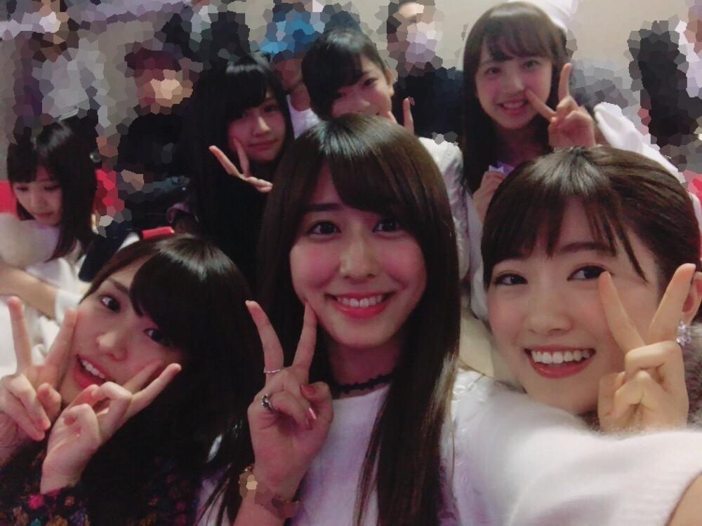
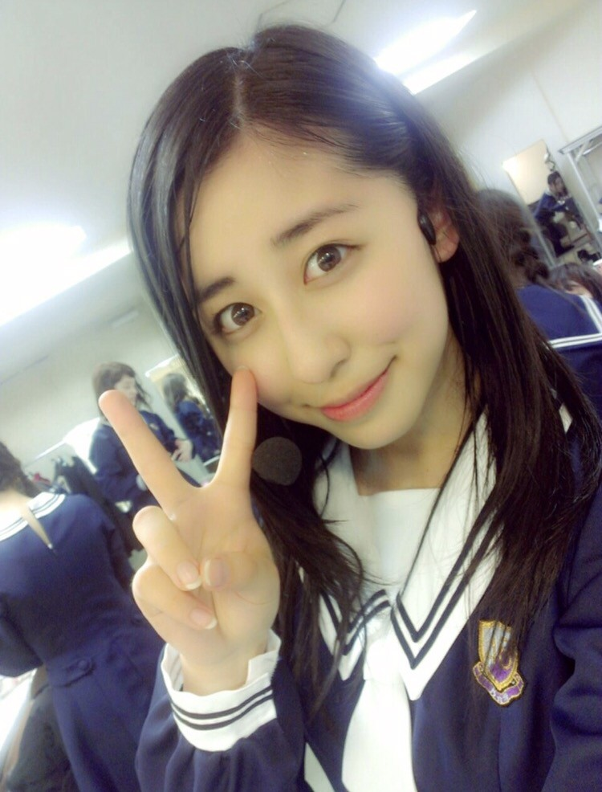
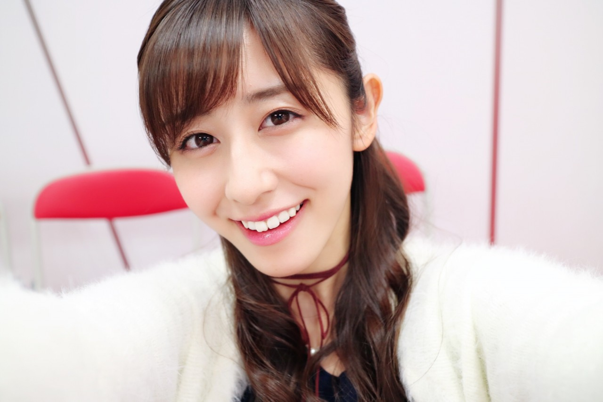

| 2016/12 08 Thu | 斎藤ちはる 初心。 |
ちはるーむへようこそ！
Merry 乃木坂46 Merry X'mas Show3日目が終わり、
明日はついにアンダー単独公演最終日。
緊張する〜...！
実は今日選抜単独公演を
かりんと、ひなちまと、三期生のみんなと
一緒に見に行って来たんです\( ˆ ˆ )/

写って〜♪と言ったら
三期生のみんなも一緒に写ってくれた！
今度はもっと明るいところで、
顔が隠れないように撮ろうねm(_ _)m笑
選抜単独公演は初めてなので
選抜メンバーがライブをしているのを
客観的に見るのは初めてだったのですが
本当にみんな可愛かった(﹡ˆ ˆ﹡)
こうしたら可愛いんだ！
綺麗なんだ！
舞台映えするんだ！
と色々な発見があって勉強にもなりました◎
でも悔しいのも事実。
私ももっと頑張らなきゃいけないなと
改めて感じることができました。
初心。
明日のライブは、
選抜単独公演に負けないくらい。
いや、それ以上のパワーで
素敵なライブをお届けしたいと思います！！

初心を忘れずに！
という事で、初期の写真を。
1st Birthday LIVEの時の写真！
高一の終わり頃なので
4年ちょい前とかだと思われます。
前髪が無いので大人っぽく見せてるけど
顔がとても幼い！
自撮りでピースもどこか幼い！
この時よりはパフォーマンスする回数も増え
どんな準備をしたらいいかも分かってきて
ライブの空気感も分かってきています。
だけど初心を忘れずに、
この時のように緊張感を持ちながらも
全力でパフォーマンスをします！！

そして大切なのは、
とにかくライブを楽しむこと！
だと思っています◎
私はライブが大好きなので、
それが皆さんに伝わればいいな。
そして明日も曲中のコールは「ちはる」で、
赤×青のサイリウムも
お願いしたいです\( ˆ ˆ )/♡
頑張ってきます！！
--------------------------------------------♡
♬ ChihaMusic
「無口なライオン」乃木坂46
選抜単独公演の1人1人プロデュース企画で
まっつんが、ギター弾き語りで
歌っていたこの曲にジーンとしました。
この歌詞の切なさと、
まっつんの可愛い声と、
ギターの優しい音色が
綺麗にマッチしていてとても良かった。
"あぁ 自分を偽って 生きることより
そう 苦しみながら 君は君の道を行け"
自分の道を迷わずに進んでいくこと。
本当いい歌詞だな〜と感じました。
あ！そうだ！
明日来られる方、
開演時間ギリギリに行くと
少し損した気持ちになると思いますよ( ∩ˇωˇ∩)
是非時間に余裕を持ってお越しください♪
明日の準備をしてから寝ます！
おやすみ〜
斎藤ちはる